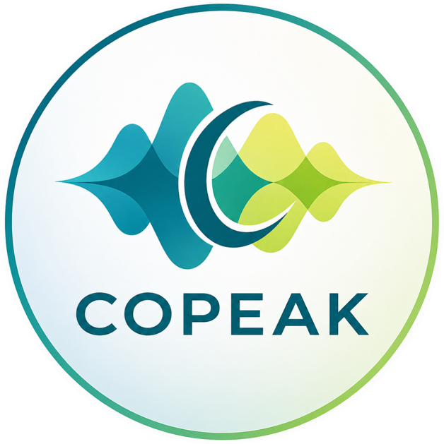

CopeakVOCABULARY CHECK COPEAK · VOCABULARY CHECK
あなたの語彙力、まず測ってみよう。
例文の中の重要な英語表現を理解できるか。回答に合わせて難易度が変わる語彙診断です。
問題を準備しています…
現在の推定レベル暫定・学習用
—/ 8
12
34
56
78
基礎発展
前回—
診断回数0
直近の正答率—
成長の記録
ご利用前に：診断結果は学習用の暫定目安です。英検・CEFRの公式判定ではありません。履歴はこのブラウザ内だけに保存されます。
1 / 25正誤によって難易度が変わります
次の英語のチャンクに最も近い意味を選んでください。
現在のチャンク語彙力
推定レベル（暫定）
Lv.4 / 8
推定の幅Lv.3–5参考値・公式認定ではありません
正解0 / 25
わからない0
モードQuick
成長の記録
出題レベルごとの結果
次に学習するとよい領域
復習したいチャンク
診断の詳しい情報を見る
判定の根拠と限界
CSVは本人の操作時のみダウンロードされます。個人名・日時なし。
診断結果はこのブラウザにのみ保存されます。ホーム画面に戻るとレベルが表示されます。
問題を読み込めませんでしたCopeak ホームへ